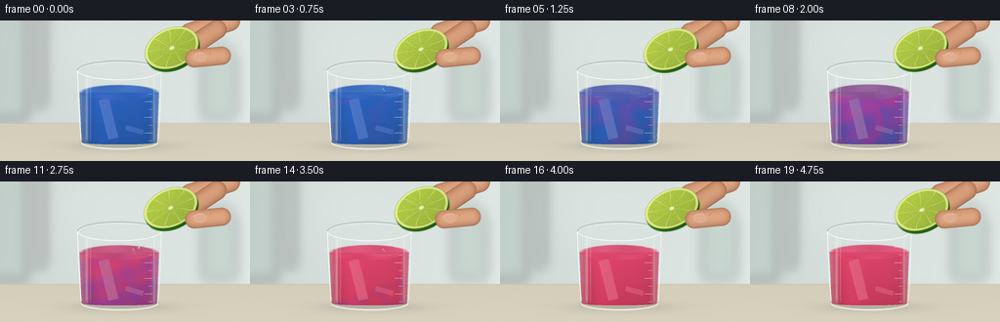
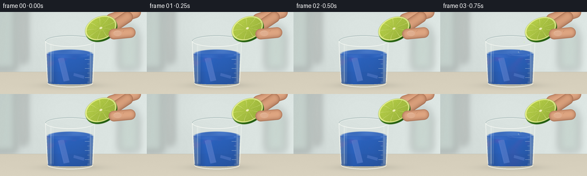

CODING AGENTS AS PIXEL WORLD MODELS
traex/GPT-6.1-Sol · material_0035
点击播放 · 原生 RGB 像素
逐轮保存的候选
回放视频、检查图与代码变化。
每份候选均可单独播放。实际图片检查记录在下方工具轨迹中。
候选 01播放与检查图
点击播放 · 原生 RGB 像素


展开代码变化
--- 上一保存版本
+++ 本次保存版本
@@ -0,0 +1,218 @@
+from pathlib import Path
+import numpy as np
+from PIL import Image, ImageDraw, ImageFilter
+import artifact_io
+
+ROOT=Path(__file__).resolve().parent
+S=4; W,H=256,144; w,h=W*S,H*S
+Y,X=np.mgrid[0:h,0:w].astype(float); X/=S; Y/=S
+rng=np.random.default_rng(35)
+noise=rng.normal(0,1,(h,w))
+
+def overlay(im, mask, color):
+ a=np.clip(mask,0,1)[...,None]
+ if np.ndim(color)==1: color=np.asarray(color)[None,None,:]
+ return im*(1-a)+np.asarray(color)*a
+
+def layer_draw(im, fn, blur=0):
+ layer=Image.new('RGBA',(w,h)); d=ImageDraw.Draw(layer)
+ fn(d)
+ if blur:layer=layer.filter(ImageFilter.GaussianBlur(blur*S))
+ base=Image.fromarray(np.clip(im,0,255).astype(np.uint8),'RGB').convert('RGBA')
+ base.alpha_composite(layer)
+ return np.asarray(base.convert('RGB')).astype(float)
+
+def ellipse(d,box,fill,outline=None,width=1):
+ d.ellipse(tuple(int(a*S) for a in box),fill=fill,outline=outline,width=max(1,int(width*S)))
+def line(d,pts,fill,width=1):
+ d.line([(int(x*S),int(y*S)) for x,y in pts],fill=fill,width=max(1,int(width*S)))
+
+# Bright softly out-of-focus laboratory background.
+bg=np.zeros((h,w,3)); bg[:]=[215,224,221]
+bg+=((X-125)*.065+(Y-60)*.03)[...,None]
+bg+=7*np.exp(-((X-94)/67)**2-((Y-22)/44)**2)[...,None]
+# Muted distant shapes, intentionally defocused.
+def background(d):
+ d.rectangle((0,0,28*S,101*S),fill=(177,194,187,105))
+ d.rectangle((37*S,0,45*S,88*S),fill=(241,246,240,135))
+ d.rectangle((207*S,38*S,242*S,100*S),fill=(156,179,167,80))
+ ellipse(d,(210,24,239,42),(167,188,176,65))
+bg=layer_draw(bg,background,6)
+# Pale stone bench, softly lit with fine grain.
+bench=Y>105
+benchcol=np.zeros_like(bg); benchcol[:]=[213,206,187]
+benchcol+=(.12*(Y-106))[...,None]+noise[...,None]*.45
+bg=overlay(bg,bench.astype(float),benchcol)
+bg=overlay(bg,np.exp(-((Y-105)/.8)**2)*.1,[120,128,115])
+# Ground shadow and subtle blue-tinted refracted caustic.
+shadow=np.exp(-((X-125)/47)**2-((Y-129)/5.2)**2)*.22
+bg=overlay(bg,shadow,[75,81,73])
+bg=overlay(bg,np.exp(-((X-126)/29)**2-((Y-132)/2.3)**2)*.16,[248,248,224])
+
+# Profile of the vessel: slightly tapered scientific glass.
+top=51.0; bottom=128.0; center=122.0
+r=43.2-(Y-top)*.043
+q=(X-center)/r
+inside=(np.abs(q)<1)&(Y>=top)&(Y<=bottom)
+# Rounded base boundary.
+base_boundary=124.5+4.5*np.sqrt(np.maximum(0,1-((X-center)/39.9)**2))
+inside &= Y<=base_boundary
+
+# Lime texture: a real cut half, with translucent radial vesicles.
+def lime(im,t):
+ cx=175.8-1.5*np.sin(np.pi*min(t*1.25,1)); cy=28+1.5*np.sin(t*7)
+ ang=-.42; dx=X-cx; dy=Y-cy
+ u=dx*np.cos(ang)+dy*np.sin(ang); v=-dx*np.sin(ang)+dy*np.cos(ang)
+ rx=29.5; ry=20.6*(1-.055*np.sin(t*9)**2)
+ rr=np.sqrt((u/rx)**2+(v/ry)**2); theta=np.arctan2(v/ry,u/rx)
+ # Shadow thickness below the sliced face, darker bumpy rind.
+ rind_r=np.sqrt((u/rx)**2+((v-3.2)/ry)**2)
+ rindmask=np.clip((1-rind_r)*S*5,0,1)
+ light=np.clip(-u/rx*.22-v/ry*.32,-.6,.6)
+ rindcol=np.zeros_like(im); rindcol[:]=[49,110,21]
+ rindcol+=light[...,None]*np.array([36,49,15])+noise[...,None]*2.7
+ rindcol+=np.sin(u*6.3+np.cos(v*7))*np.sin(v*7.8)[...,None] if False else 0
+ im=overlay(im,rindmask,rindcol)
+ cutmask=np.clip((1-rr)*S*5,0,1)
+ face=np.zeros_like(im); face[:]=[219,230,134]
+ face+=light[...,None]*np.array([30,23,13])
+ # Thin white pith ring and green external edge.
+ outer=np.clip((rr-.955)*28,0,1)
+ face=face*(1-outer[...,None])+np.array([79,137,29])*outer[...,None]
+ # Nine sections separated by uneven pale radial membranes.
+ phase=theta*9/(2*np.pi)+.05*np.sin(rr*7)
+ sep=np.abs(np.sin(phase*np.pi))
+ membrane=np.exp(-(sep/.055)**2)
+ flesh=(rr<.875)&(rr>.07)
+ pulp=np.zeros_like(im); pulp[:]=[166,191,65]
+ # Fine elongated juice sacs follow the radial direction.
+ fibers=np.sin(theta*167+np.sin(rr*38)*.65)*np.sin(rr*85+theta*11)
+ twinkle=np.maximum(0,np.sin(theta*211+rr*14))**12
+ pulp+=(12*fibers+9*noise+13*twinkle)[...,None]*np.array([1,.94,.61])
+ pulp+=light[...,None]*np.array([36,36,16])
+ pulp=overlay(pulp,membrane*.9,[234,237,166])
+ face=np.where(flesh[...,None],pulp,face)
+ # Small pale core with star-shaped borders.
+ core=rr<(.09+.018*np.cos(theta*9))
+ face=np.where(core[...,None],np.array([238,238,183]),face)
+ im=overlay(im,cutmask,face)
+ # Tiny glossy juice highlights, sparsely distributed across pulp.
+ glints=flesh & (np.sin(theta*187+rr*61)>.994)&(np.cos(rr*76-theta*17)>.75)
+ im=overlay(im,glints.astype(float)*.42,[248,251,203])
+ return im,cx,cy
+
+# Fingers surround the rind at upper right; organic shaded silhouettes.
+def finger(im,x0,y0,x1,y1,radius,brightness=0):
+ dx=x1-x0;dy=y1-y0
+ p=np.clip(((X-x0)*dx+(Y-y0)*dy)/(dx*dx+dy*dy),0,1)
+ nx=X-(x0+p*dx);ny=Y-(y0+p*dy)
+ dist=np.sqrt(nx*nx+ny*ny)
+ mask=np.clip((radius-dist)*S,0,1)
+ shading=np.sqrt(np.maximum(0,1-(dist/radius)**2))
+ c=np.zeros_like(im);c[:]=[153+brightness,98+brightness,71+brightness]
+ c+=shading[...,None]*np.array([66,64,55])
+ c+=(-ny/radius)[...,None]*np.array([7,5,3])+noise[...,None]*.45
+ return overlay(im,mask,c)
+
+frames=[]
+for i in range(20):
+ t=i/19
+ im=bg.copy()
+ # Translucent empty glass, very slight distortion and shadow at edges.
+ glass=np.zeros_like(im);glass[:]=[225,235,231]
+ glass+=np.exp(-((q+.74)/.10)**2)[...,None]*10
+ im=overlay(im,inside.astype(float)*(.055+.07*np.abs(q)**6),glass)
+ # Liquid begins brilliant blue; added acid creates magenta plumes, then red.
+ surface=73.5-1.3*t
+ lower=125+2*np.sqrt(np.maximum(0,1-(q/.96)**2))
+ liquid=(np.abs(q)<.965)&(Y>surface)&(Y<lower)
+ prog=np.clip((t-.17)/.66,0,1)
+ depth=(Y-surface)/53
+ wave=.065*np.sin(depth*14+t*8+q*4)+.045*np.sin(q*11-depth*5+t*7)
+ local=np.clip((prog*1.36-depth*.30+(1-q)*.045+wave),0,1)
+ # Local acid ribbons are stronger immediately under the drops.
+ plume=np.exp(-((X-(139-16*depth+4*np.sin(depth*8+t*6)))/(3.5+depth*12))**2)
+ local=np.maximum(local,plume*np.clip((t-.13)*2,0,.8)*(1-depth*.25))
+ if t>.87:local=local*.15+.85
+ blue=np.array([24,80,174]); purple=np.array([136,49,150]); red=np.array([208,48,88])
+ mix1=np.minimum(local*2,1)[...,None];mix2=np.maximum(local*2-1,0)[...,None]
+ lc=blue*(1-mix1)+purple*mix1
+ lc=lc*(1-mix2)+red*mix2
+ illumination=.91+.16*np.sqrt(np.maximum(0,1-q*q))-.14*depth+.08*np.exp(-((q+.42)/.24)**2)
+ lc*=illumination[...,None]
+ # Transmission brightens the less optically thick sides.
+ edge=np.clip((np.abs(q)-.75)/.22,0,1)[...,None]*.35
+ lc=lc*(1-edge)+bg*edge
+ lc+=noise[...,None]*.35
+ im=overlay(im,liquid.astype(float)*.91,lc)
+ # Papers partially immersed, one long strip tilted in front, fragments below.
+ def papers(d):
+ p=float(np.clip(prog*1.25,0,1));col=tuple((np.array([85,122,200])*(1-p)+np.array([224,102,130])*p).astype(int))
+ d.polygon([(101*S,82*S),(111*S,79*S),(121*S,120*S),(111*S,122*S)],fill=col+(185,))
+ line(d,[(102,82),(111,120)],tuple(min(255,c+27) for c in col)+(130,),.7)
+ d.polygon([(129*S,107*S),(147*S,112*S),(146*S,117*S),(128*S,112*S)],fill=col+(135,))
+ im=layer_draw(im,papers)
+ # Elliptical liquid surface with a bright meniscus.
+ surfshape=((X-center)/41.5)**2+((Y-surface)/8.1)**2
+ smask=np.clip((1-surfshape)*S,0,1)
+ surfcol=np.zeros_like(im); surfcol[:]=blue*(1-min(prog*1.4,1))+red*min(prog*1.4,1)
+ surfcol=surfcol*.92+np.array([28,29,31])
+ surfcol+=(6*np.sin(X*.13+t*4)*np.cos(Y*.32))[...,None]
+ im=overlay(im,smask*.91,surfcol)
+ # Droplet-triggered concentric surface ripples, changing each exposure.
+ def details(d):
+ phase=(i*.64)%1
+ if 3<=i<=15:
+ for j in range(2):
+ rad=3+phase*12+j*7
+ d.arc(tuple(int(z*S) for z in (138-rad,surface-rad*.18,138+rad,surface+rad*.18)),5,170,fill=(222,230,244,60-j*15),width=2)
+ # Clear glass rim, edges and bottom.
+ d.arc((79*S,41*S,165*S,61*S),180,359,fill=(132,157,157,170),width=3)
+ d.arc((79*S,41*S,165*S,61*S),0,179,fill=(253,254,249,220),width=4)
+ d.arc((81*S,43*S,163*S,59*S),180,359,fill=(249,253,247,155),width=2)
+ line(d,[(79,51),(80,78),(82,111),(83,122)],(252,254,247,190),1.2)
+ line(d,[(165,51),(164,80),(163,106),(162,122)],(246,251,245,170),1.1)
+ d.arc((83*S,118*S,162*S,132*S),0,180,fill=(250,251,242,220),width=5)
+ d.arc((86*S,119*S,160*S,129*S),0,180,fill=(93,122,123,115),width=2)
+ # Small glass measuring ticks, without any distracting overlay text.
+ for yy in [67,83,99,115]:
+ line(d,[(148,yy),(156,yy+.2)],(249,251,242,155),.6)
+ line(d,[(152,yy+8),(156,yy+8)],(249,251,242,115),.5)
+ im=layer_draw(im,details)
+ # Vertical photographic softbox reflections on curved glass front.
+ glare=(np.exp(-((X-88.7)/1.45)**2)*.32+np.exp(-((X-92.5)/.65)**2)*.20+np.exp(-((X-157.7)/1)**2)*.25)
+ glare*=inside*(np.clip((Y-53)/7,0,1))*np.clip((126-Y)/5,0,1)
+ im=overlay(im,glare,[250,255,247])
+ # Right hand entering from beyond the top-right edge.
+ im=finger(im,235,0,195,13,11,4)
+ im=finger(im,222,9,201,23,10,-3)
+ im,cx,cy=lime(im,t)
+ # Thumb on the back rind, leaving the cut face clearly exposed.
+ im=finger(im,227,36,198.7,38.7,9.5,4)
+ # A natural pale thumbnail follows the upper surface of the thumb.
+ def nail(d):
+ ellipse(d,(197.8,32.6,212,42.4),(224,175,144,235))
+ d.arc((198*S,33*S,212*S,42*S),190,300,fill=(249,214,187,160),width=2)
+ line(d,[(216,32.3),(214,35)],(143,91,65,90),.5)
+ im=layer_draw(im,nail)
+ # Lime juice drips in a short intermittent stream into the liquid.
+ if 3<=i<=15:
+ phase=(i*.63)%1
+ xstart=151.8-1.3*np.sin(t*7); ystart=45.5
+ def drops(d):
+ # Beaded thin stream, gravity accelerated.
+ line(d,[(xstart,ystart),(xstart-1,ystart+3.8)],(240,247,190,185),.7)
+ for k in range(2):
+ f=(phase+k*.48)%1
+ yy=ystart+5+f*f*20
+ xx=xstart-1-(yy-ystart)*.43
+ ellipse(d,(xx-.95,yy-1.6,xx+.95,yy+1.4),(211,231,192,160))
+ line(d,[(xx-.3,yy-1),(xx-.3,yy+.15)],(255,255,225,215),.45)
+ if phase>.65:
+ line(d,[(137.8,surface-1),(136.1,surface-4),(135.7,surface-2)],(216,233,223,140),.6)
+ im=layer_draw(im,drops)
+ # Fine consistent photographic grain; oversampling yields clean edges.
+ im+=noise[...,None]*.30
+ frame=Image.fromarray(np.clip(im,0,255).astype('uint8')).resize((W,H),Image.Resampling.LANCZOS)
+ frames.append(np.asarray(frame))
+artifact_io.save(np.stack(frames),ROOT)
可观测工具轨迹
实际执行的命令与返回图片。
命令 1exit 0
/bin/bash -lc 'ls -la && cat prompt.txt && cat GENERATION_RULES.md && cat task_spec.json'
命令 2exit 0
/bin/bash -lc 'cat artifact_io.py'
命令 3exit 0
/bin/bash -lc "cat > generate.py <<'PY'
from pathlib import Path
import numpy as np
from PIL import Image, ImageDraw, ImageFilter
import artifact_io
ROOT=Path(__file__).resolve().parent
S=4; W,H=256,144; w,h=W*S,H*S
Y,X=np.mgrid[0:h,0:w].astype(float); X/=S; Y/=S
rng=np.random.default_rng(35)
noise=rng.normal(0,1,(h,w))
def overlay(im, mask, color):
a=np.clip(mask,0,1)[...,None]
if np.ndim(color)==1: color=np.asarray(color)[None,None,:]
return im*(1-a)+np.asarray(color)*a
def layer_draw(im, fn, blur=0):
layer=Image.new('RGBA',(w,h)); d=ImageDraw.Draw(layer)
fn(d)
if blur:layer=layer.filter(ImageFilter.GaussianBlur(blur*S))
base=Image.fromarray(np.clip(im,0,255).astype(np.uint8),'RGB').convert('RGBA')
base.alpha_composite(layer)
return np.asarray(base.convert('RGB')).astype(float)
def ellipse(d,box,fill,outline=None,width=1):
d.ellipse(tuple(int(a*S) for a in box),fill=fill,outline=outline,width=max(1,int(width*S)))
def line(d,pts,fill,width=1):
d.line([(int(x*S),int(y*S)) for x,y in pts],fill=fill,width=max(1,int(width*S)))
# Bright softly out-of-focus laboratory background.
bg=np.zeros((h,w,3)); bg[:]=[215,224,221]
bg+=((X-125)*.065+(Y-60)*.03)[...,None]
bg+=7*np.exp(-((X-94)/67)**2-((Y-22)/44)**2)[...,None]
# Muted distant shapes, intentionally defocused.
def background(d):
d.rectangle((0,0,28*S,101*S),fill=(177,194,187,105))
d.rectangle((37*S,0,45*S,88*S),fill=(241,246,240,135))
d.rectangle((207*S,38*S,242*S,100*S),fill=(156,179,167,80))
ellipse(d,(210,24,239,42),(167,188,176,65))
bg=layer_draw(bg,background,6)
# Pale stone bench, softly lit with fine grain.
bench=Y>105
benchcol=np.zeros_like(bg); benchcol[:]=[213,206,187]
benchcol+=(.12*(Y-106))[...,None]+noise[...,None]*.45
bg=overlay(bg,bench.astype(float),benchcol)
bg=overlay(bg,np.exp(-((Y-105)/.8)**2)*.1,[120,128,115])
# Ground shadow and subtle blue-tinted refracted caustic.
shadow=np.exp(-((X-125)/47)**2-((Y-129)/5.2)**2)*.22
bg=overlay(bg,shadow,[75,81,73])
bg=overlay(bg,np.exp(-((X-126)/29)**2-((Y-132)/2.3)**2)*.16,[248,248,224])
# Profile of the vessel: slightly tapered scientific glass.
top=51.0; bottom=128.0; center=122.0
r=43.2-(Y-top)*.043
q=(X-center)/r
inside=(np.abs(q)<1)&(Y>=top)&(Y<=bottom)
# Rounded base boundary.
base_boundary=124.5+4.5*np.sqrt(np.maximum(0,1-((X-center)/39.9)**2))
inside &= Y<=base_boundary
# Lime texture: a real cut half, with translucent radial vesicles.
def lime(im,t):
cx=175.8-1.5*np.sin(np.pi*min(t*1.25,1)); cy=28+1.5*np.sin(t*7)
ang=-.42; dx=X-cx; dy=Y-cy
u=dx*np.cos(ang)+dy*np.sin(ang); v=-dx*np.sin(ang)+dy*np.cos(ang)
rx=29.5; ry=20.6*(1-.055*np.sin(t*9)**2)
rr=np.sqrt((u/rx)**2+(v/ry)**2); theta=np.arctan2(v/ry,u/rx)
# Shadow thickness below the sliced face, darker bumpy rind.
rind_r=np.sqrt((u/rx)**2+((v-3.2)/ry)**2)
rindmask=np.clip((1-rind_r)*S*5,0,1)
light=np.clip(-u/rx*.22-v/ry*.32,-.6,.6)
rindcol=np.zeros_like(im); rindcol[:]=[49,110,21]
rindcol+=light[...,None]*np.array([36,49,15])+noise[...,None]*2.7
rindcol+=np.sin(u*6.3+np.cos(v*7))*np.sin(v*7.8)[...,None] if False else 0
im=overlay(im,rindmask,rindcol)
cutmask=np.clip((1-rr)*S*5,0,1)
face=np.zeros_like(im); face[:]=[219,230,134]
face+=light[...,None]*np.array([30,23,13])
# Thin white pith ring and green external edge.
outer=np.clip((rr-.955)*28,0,1)
face=face*(1-outer[...,None])+np.array([79,137,29])*outer[...,None]
# Nine sections separated by uneven pale radial membranes.
phase=theta*9/(2*np.pi)+.05*np.sin(rr*7)
sep=np.abs(np.sin(phase*np.pi))
membrane=np.exp(-(sep/.055)**2)
flesh=(rr<.875)&(rr>.07)
pulp=np.zeros_like(im); pulp[:]=[166,191,65]
# Fine elongated juice sacs follow the radial direction.
fibers=np.sin(theta*167+np.sin(rr*38)*.65)*np.sin(rr*85+theta*11)
twinkle=np.maximum(0,np.sin(theta*211+rr*14))**12
pulp+=(12*fibers+9*noise+13*twinkle)[...,None]*np.array([1,.94,.61])
pulp+=light[...,None]*np.array([36,36,16])
pulp=overlay(pulp,membrane*.9,[234,237,166])
face=np.where(flesh[...,None],pulp,face)
# Small pale core with star-shaped borders.
core=rr<(.09+.018*np.cos(theta*9))
face=np.where(core[...,None],np.array([238,238,183]),face)
im=overlay(im,cutmask,face)
# Tiny glossy juice highlights, sparsely distributed across pulp.
glints=flesh & (np.sin(theta*187+rr*61)>.994)&(np.cos(rr*76-theta*17)>.75)
im=overlay(im,glints.astype(float)*.42,[248,251,203])
return im,cx,cy
# Fingers surround the rind at upper right; organic shaded silhouettes.
def finger(im,x0,y0,x1,y1,radius,brightness=0):
dx=x1-x0;dy=y1-y0
p=np.clip(((X-x0)*dx+(Y-y0)*dy)/(dx*dx+dy*dy),0,1)
nx=X-(x0+p*dx);ny=Y-(y0+p*dy)
dist=np.sqrt(nx*nx+ny*ny)
mask=np.clip((radius-dist)*S,0,1)
shading=np.sqrt(np.maximum(0,1-(dist/radius)**2))
c=np.zeros_like(im);c[:]=[153+brightness,98+brightness,71+brightness]
c+=shading[...,None]*np.array([66,64,55])
c+=(-ny/radius)[...,None]*np.array([7,5,3])+noise[...,None]*.45
return overlay(im,mask,c)
frames=[]
for i in range(20):
t=i/19
im=bg.copy()
# Translucent empty glass, very slight distortion and shadow at edges.
glass=np.zeros_like(im);glass[:]=[225,235,231]
glass+=np.exp(-((q+.74)/.10)**2)[...,None]*10
im=overlay(im,inside.astype(float)*(.055+.07*np.abs(q)**6),glass)
# Liquid begins brilliant blue; added acid creates magenta plumes, then red.
surface=73.5-1.3*t
lower=125+2*np.sqrt(np.maximum(0,1-(q/.96)**2))
liquid=(np.abs(q)<.965)&(Y>surface)&(Y<lower)
prog=np.clip((t-.17)/.66,0,1)
depth=(Y-surface)/53
wave=.065*np.sin(depth*14+t*8+q*4)+.045*np.sin(q*11-depth*5+t*7)
local=np.clip((prog*1.36-depth*.30+(1-q)*.045+wave),0,1)
# Local acid ribbons are stronger immediately under the drops.
plume=np.exp(-((X-(139-16*depth+4*np.sin(depth*8+t*6)))/(3.5+depth*12))**2)
local=np.maximum(local,plume*np.clip((t-.13)*2,0,.8)*(1-depth*.25))
if t>.87:local=local*.15+.85
blue=np.array([24,80,174]); purple=np.array([136,49,150]); red=np.array([208,48,88])
mix1=np.minimum(local*2,1)[...,None];mix2=np.maximum(local*2-1,0)[...,None]
lc=blue*(1-mix1)+purple*mix1
lc=lc*(1-mix2)+red*mix2
illumination=.91+.16*np.sqrt(np.maximum(0,1-q*q))-.14*depth+.08*np.exp(-((q+.42)/.24)**2)
lc*=illumination[...,None]
# Transmission brightens the less optically thick sides.
edge=np.clip((np.abs(q)-.75)/.22,0,1)[...,None]*.35
lc=lc*(1-edge)+bg*edge
lc+=noise[...,None]*.35
im=overlay(im,liquid.astype(float)*.91,lc)
# Papers partially immersed, one long strip tilted in front, fragments below.
def papers(d):
p=float(np.clip(prog*1.25,0,1));col=tuple((np.array([85,122,200])*(1-p)+np.array([224,102,130])*p).astype(int))
d.polygon([(101*S,82*S),(111*S,79*S),(121*S,120*S),(111*S,122*S)],fill=col+(185,))
line(d,[(102,82),(111,120)],tuple(min(255,c+27) for c in col)+(130,),.7)
d.polygon([(129*S,107*S),(147*S,112*S),(146*S,117*S),(128*S,112*S)],fill=col+(135,))
im=layer_draw(im,papers)
# Elliptical liquid surface with a bright meniscus.
surfshape=((X-center)/41.5)**2+((Y-surface)/8.1)**2
smask=np.clip((1-surfshape)*S,0,1)
surfcol=np.zeros_like(im); surfcol[:]=blue*(1-min(prog*1.4,1))+red*min(prog*1.4,1)
surfcol=surfcol*.92+np.array([28,29,31])
surfcol+=(6*np.sin(X*.13+t*4)*np.cos(Y*.32))[...,None]
im=overlay(im,smask*.91,surfcol)
# Droplet-triggered concentric surface ripples, changing each exposure.
def details(d):
phase=(i*.64)%1
if 3<=i<=15:
for j in range(2):
rad=3+phase*12+j*7
d.arc(tuple(int(z*S) for z in (138-rad,surface-rad*.18,138+rad,surface+rad*.18)),5,170,fill=(222,230,244,60-j*15),width=2)
# Clear glass rim, edges and bottom.
d.arc((79*S,41*S,165*S,61*S),180,359,fill=(132,157,157,170),width=3)
d.arc((79*S,41*S,165*S,61*S),0,179,fill=(253,254,249,220),width=4)
d.arc((81*S,43*S,163*S,59*S),180,359,fill=(249,253,247,155),width=2)
line(d,[(79,51),(80,78),(82,111),(83,122)],(252,254,247,190),1.2)
line(d,[(165,51),(164,80),(163,106),(162,122)],(246,251,245,170),1.1)
d.arc((83*S,118*S,162*S,132*S),0,180,fill=(250,251,242,220),width=5)
d.arc((86*S,119*S,160*S,129*S),0,180,fill=(93,122,123,115),width=2)
# Small glass measuring ticks, without any distracting overlay text.
for yy in [67,83,99,115]:
line(d,[(148,yy),(156,yy+.2)],(249,251,242,155),.6)
line(d,[(152,yy+8),(156,yy+8)],(249,251,242,115),.5)
im=layer_draw(im,details)
# Vertical photographic softbox reflections on curved glass front.
glare=(np.exp(-((X-88.7)/1.45)**2)*.32+np.exp(-((X-92.5)/.65)**2)*.20+np.exp(-((X-157.7)/1)**2)*.25)
glare*=inside*(np.clip((Y-53)/7,0,1))*np.clip((126-Y)/5,0,1)
im=overlay(im,glare,[250,255,247])
# Right hand entering from beyond the top-right edge.
im=finger(im,235,0,195,13,11,4)
im=finger(im,222,9,201,23,10,-3)
im,cx,cy=lime(im,t)
# Thumb on the back rind, leaving the cut face clearly exposed.
im=finger(im,227,36,198.7,38.7,9.5,4)
# A natural pale thumbnail follows the upper surface of the thumb.
def nail(d):
ellipse(d,(197.8,32.6,212,42.4),(224,175,144,235))
d.arc((198*S,33*S,212*S,42*S),190,300,fill=(249,214,187,160),width=2)
line(d,[(216,32.3),(214,35)],(143,91,65,90),.5)
im=layer_draw(im,nail)
# Lime juice drips in a short intermittent stream into the liquid.
if 3<=i<=15:
phase=(i*.63)%1
xstart=151.8-1.3*np.sin(t*7); ystart=45.5
def drops(d):
# Beaded thin stream, gravity accelerated.
line(d,[(xstart,ystart),(xstart-1,ystart+3.8)],(240,247,190,185),.7)
for k in range(2):
f=(phase+k*.48)%1
yy=ystart+5+f*f*20
xx=xstart-1-(yy-ystart)*.43
ellipse(d,(xx-.95,yy-1.6,xx+.95,yy+1.4),(211,231,192,160))
line(d,[(xx-.3,yy-1),(xx-.3,yy+.15)],(255,255,225,215),.45)
if phase>.65:
line(d,[(137.8,surface-1),(136.1,surface-4),(135.7,surface-2)],(216,233,223,140),.6)
im=layer_draw(im,drops)
# Fine consistent photographic grain; oversampling yields clean edges.
im+=noise[...,None]*.30
frame=Image.fromarray(np.clip(im,0,255).astype('uint8')).resize((W,H),Image.Resampling.LANCZOS)
frames.append(np.asarray(frame))
artifact_io.save(np.stack(frames),ROOT)
PY
python generate.py"视觉工具实际返回图片 1

保存候选 1 份；完成命令 3 次；可验证图片返回 1 张。原始 API 响应与完整日志保留在本地。